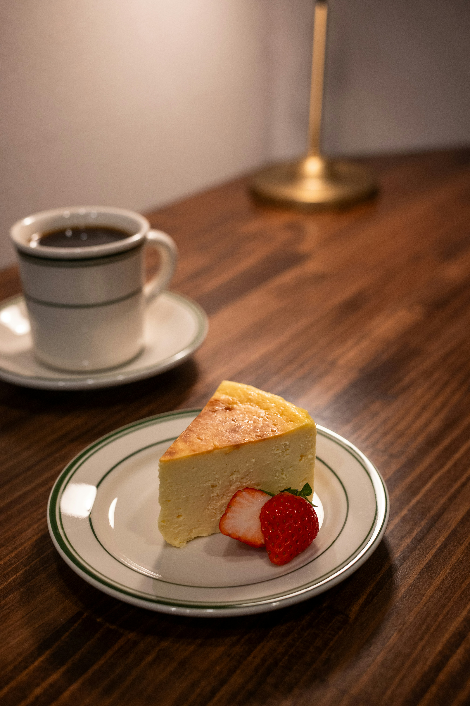

Espresso
Un café intenso, de sabor equilibrado y aroma profundo.
ORIGEN Café
Descubrí nuestra selección de cafés de especialidad y acompañamientos preparados con dedicación.

Un café intenso, de sabor equilibrado y aroma profundo.
Una combinación de espresso, leche vaporizada y espuma cremosa.
Espresso con leche texturizada, ideal para quienes buscan una bebida suave.
Una preparación que permite apreciar los aromas y sabores de cada origen.
También ofrecemos opciones de pastelería para disfrutar junto a tu café.